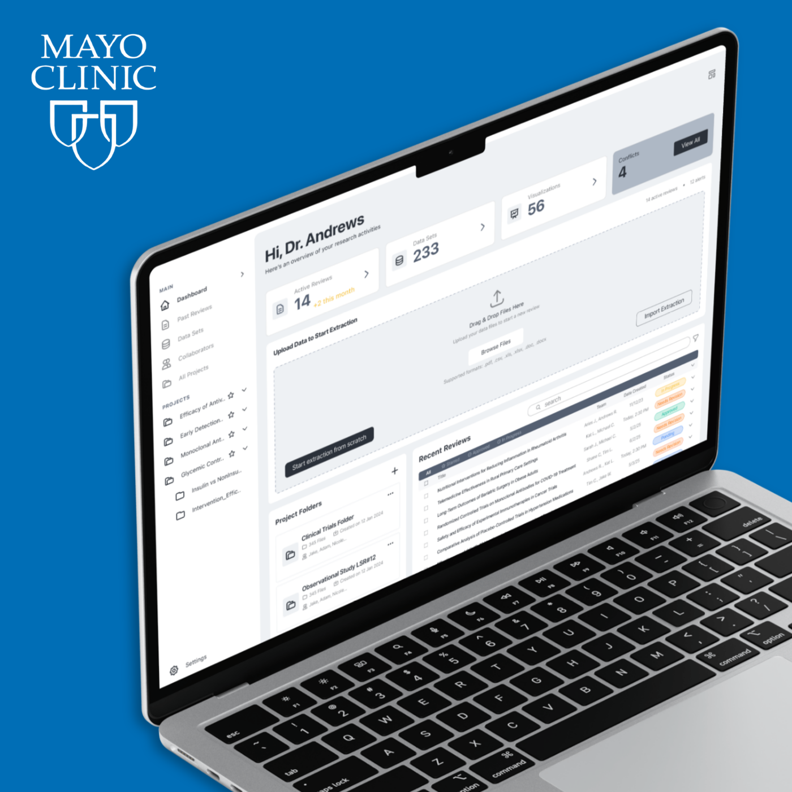
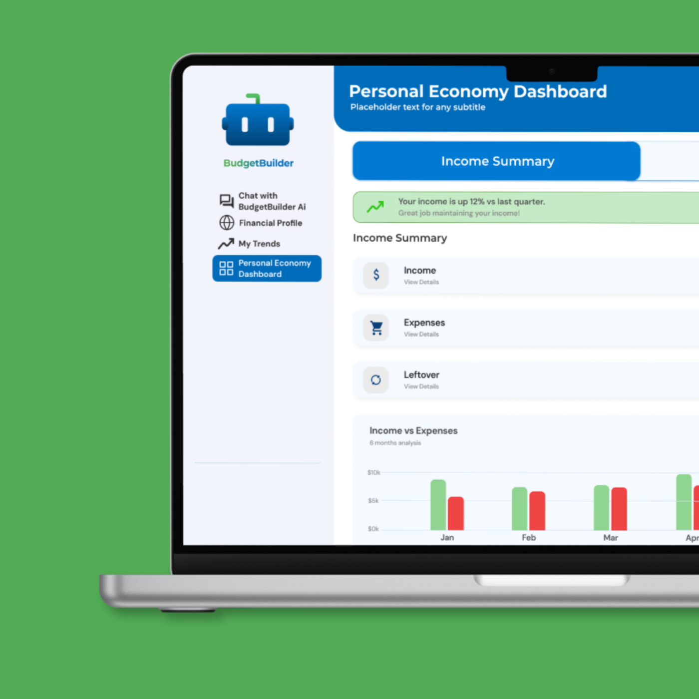

SaaS / Enterprise Analytics
End-to-end redesign of an analytics dashboard for enterprise B2B users. The existing design was a data dump - everything visible, nothing prioritised, every user overwhelmed regardless of how much they knew.
Enterprise analytics tools have a specific failure mode: they try to serve everyone by showing everything. Power users want density. Occasional users want guidance. The same interface was failing both - and because both paid the same enterprise fee, both were churning.
The dashboard had accumulated years of feature additions with no coherent hierarchy. Time-to-insight was measured in minutes, not seconds.
I interviewed 8 power users and 6 occasional users. The divide was stark: power users had built their own workarounds and were frustrated the tool didn't match their speed. Occasional users opened the dashboard, felt immediately overwhelmed, and exported to Excel instead.
Key insight: neither group was getting what they needed, but for completely opposite reasons. One needed more control, the other needed less exposure.

I designed a two-layer system: a clean summary view that answered the three questions every user asks first - how are we doing, what changed, and what needs attention - with drill-down capability for those who need depth.
For power users: saved views, customisable layouts, and a keyboard-shortcut system that matched how they already thought. For occasional users: smart defaults, contextual explanations, and a clear "next action" signal on every view.
User interviews with both cohorts, competitive analysis of enterprise analytics tools, information architecture workshops with the product team, then iterative high-fidelity design with usability testing at each major milestone.
Time-to-insight reduced significantly in usability testing. Both user groups rated the new design more favourably in post-test questionnaires. Power users reported feeling like the tool finally "kept up" with them. Occasional users stopped defaulting to Excel export for routine reporting.